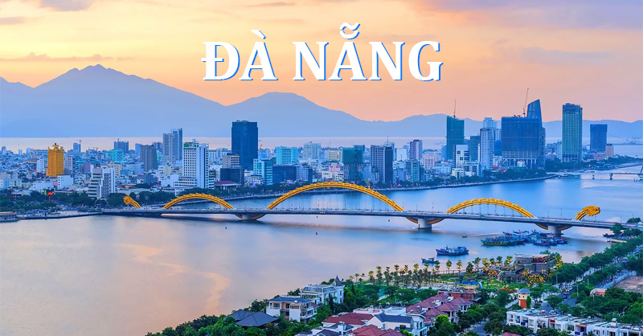
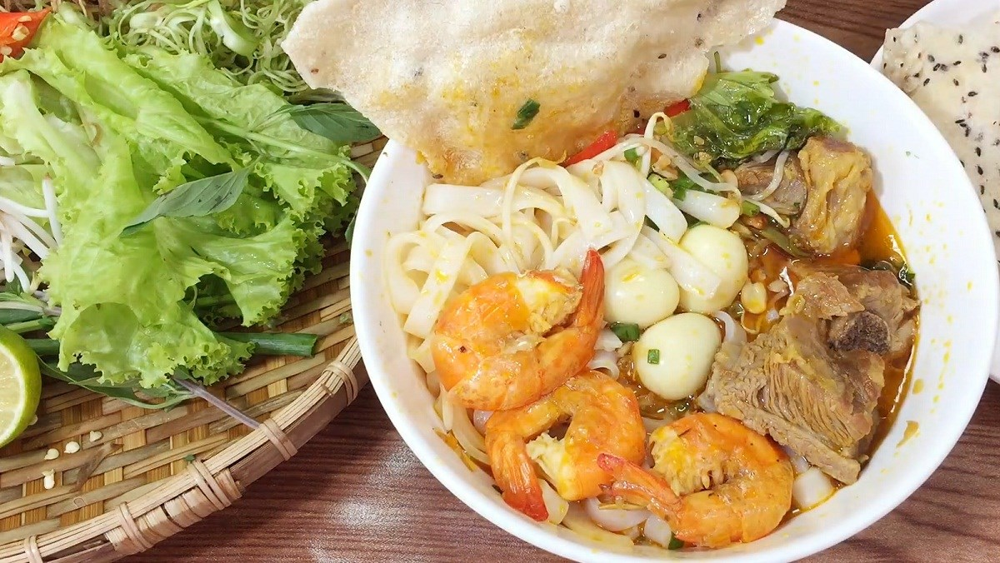
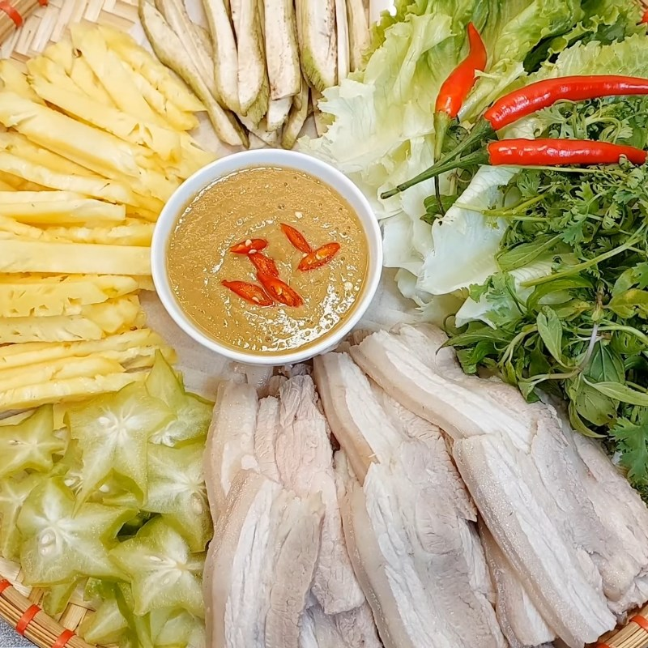
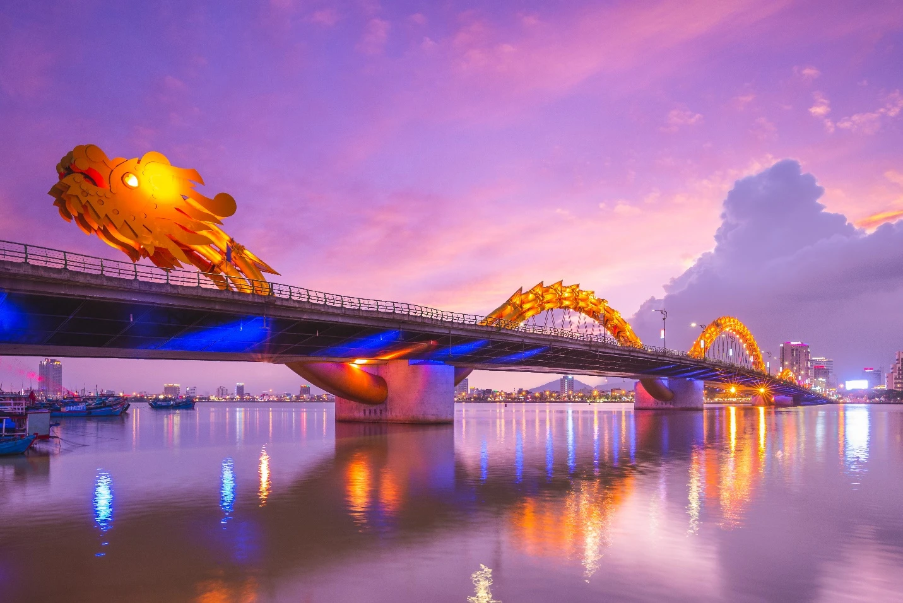

Đà Nẵng – Hành trình khám phá thành phố biển

Du lịch Đà Nẵng không chỉ là chuyến đi đến những bãi biển xanh mát hay những địa danh nổi tiếng, mà còn là hành trình khám phá một thành phố nơi thiên nhiên, văn hóa và nhịp sống hiện đại hòa quyện một cách tuyệt vời.
1. Điểm đến dành cho mọi hành trình
Nằm ở khu vực miền Trung Việt Nam, Đà Nẵng từ lâu đã trở thành một trong những điểm đến du lịch hấp dẫn nhất đối với cả du khách trong nước và quốc tế. Sở hữu những bãi biển tuyệt đẹp, cảnh quan thiên nhiên đa dạng cùng hệ thống cơ sở hạ tầng hiện đại, thành phố mang đến những trải nghiệm phong phú cho mọi đối tượng du khách.
Điều khiến Đà Nẵng trở nên đặc biệt chính là sự cân bằng giữa nhịp sống đô thị năng động và vẻ đẹp bình yên của thiên nhiên. Chỉ trong một chuyến đi, bạn có thể tận hưởng không khí trong lành của biển cả, khám phá những ngọn núi hùng vĩ, thưởng thức ẩm thực địa phương và trải nghiệm cuộc sống về đêm sôi động.
Không quá náo nhiệt như một số thành phố lớn, nhưng cũng không thiếu những hoạt động thú vị, Đà Nẵng là lựa chọn lý tưởng cho những chuyến du lịch nghỉ dưỡng, khám phá hoặc du lịch cùng gia đình và bạn bè.
2. Những địa điểm không thể bỏ lỡ
Bà Nà Hills – Chạm đến vẻ đẹp giữa mây trời
Một trong những điểm đến nổi tiếng nhất tại Đà Nẵng chính là Sun World Bà Nà Hills. Nằm trên đỉnh núi Chúa, khu du lịch này gây ấn tượng với khí hậu mát mẻ, cảnh quan núi rừng và kiến trúc mang phong cách châu Âu.
Điểm nhấn đặc biệt của Bà Nà Hills là Cầu Vàng, công trình kiến trúc nổi tiếng với hình ảnh cây cầu được nâng đỡ bởi đôi bàn tay khổng lồ giữa không gian núi rừng. Ngoài Cầu Vàng, du khách còn có thể trải nghiệm hệ thống cáp treo, tham quan Làng Pháp, khám phá các khu vui chơi giải trí và thưởng thức nhiều hoạt động nghệ thuật.
Bãi biển Mỹ Khê – Vẻ đẹp của biển miền Trung
Nếu Bà Nà Hills mang đến cảm giác khám phá, thì biển Mỹ Khê lại là nơi lý tưởng để thư giãn và tận hưởng thiên nhiên. Với bãi cát trắng mịn, làn nước biển xanh và không gian rộng lớn, Mỹ Khê được xem là một trong những bãi biển nổi tiếng của Việt Nam.
Vào buổi sáng, du khách có thể ngắm bình minh, đi dạo dọc bờ biển hoặc tham gia các hoạt động thể thao dưới nước. Buổi chiều là thời điểm thích hợp để tận hưởng không khí mát mẻ, ngắm hoàng hôn và thưởng thức những món hải sản tươi ngon tại các nhà hàng ven biển.
Bán đảo Sơn Trà – Khám phá thiên nhiên hoang sơ
Bán đảo Sơn Trà là một trong những khu vực có giá trị thiên nhiên nổi bật tại Đà Nẵng. Nơi đây sở hữu những cánh rừng xanh rộng lớn, hệ sinh thái đa dạng và những cung đường ven biển tuyệt đẹp.
Một trong những địa điểm nổi bật tại Sơn Trà là chùa Linh Ứng, nơi có tượng Phật Quan Thế Âm hướng ra biển. Từ khu vực này, du khách có thể ngắm nhìn toàn cảnh thành phố và tận hưởng không gian thanh bình.
Sơn Trà còn là nơi sinh sống của nhiều loài động vật quý hiếm, trong đó có voọc chà vá chân nâu. Khi khám phá Sơn Trà, du khách nên chú ý bảo vệ môi trường, không cho động vật hoang dã ăn và tuân thủ các quy định tại khu vực bảo tồn.
3. Khám phá ẩm thực Đà Nẵng

Một chuyến du lịch sẽ không thể trọn vẹn nếu thiếu trải nghiệm ẩm thực địa phương. Đà Nẵng nổi tiếng với nhiều món ăn mang đậm hương vị miền Trung, vừa hấp dẫn vừa có mức giá phù hợp với nhiều đối tượng du khách.
Mì Quảng là món ăn đặc trưng mà bất kỳ ai đến Đà Nẵng cũng nên thử. Sợi mì mềm, nước dùng đậm đà, kết hợp cùng thịt, tôm, trứng và bánh tráng tạo nên hương vị đặc biệt.

Bánh tráng cuốn thịt heo cũng là một lựa chọn được nhiều người yêu thích. Món ăn kết hợp giữa thịt heo luộc, rau sống, bánh tráng và mắm nêm, mang đến sự hòa quyện giữa vị béo, tươi mát và đậm đà. Ngoài ra, du khách còn có thể thưởng thức bún chả cá, bánh xèo, nem lụi và nhiều món hải sản tươi ngon.
Để khám phá ẩm thực địa phương một cách trọn vẹn, bạn có thể ghé thăm các khu chợ truyền thống như chợ Cồn hoặc chợ Hàn. Đây không chỉ là nơi thưởng thức món ăn mà còn là cơ hội tìm hiểu về đời sống thường ngày của người dân địa phương.
4. Đà Nẵng về đêm – Một thành phố không ngủ

Khi màn đêm buông xuống, Đà Nẵng mang một vẻ đẹp hoàn toàn khác. Những cây cầu bắc qua sông Hàn được thắp sáng, tạo nên khung cảnh lung linh và đầy sức sống.
Cầu Rồng là một trong những biểu tượng nổi bật của thành phố. Vào những dịp cuối tuần và ngày lễ, du khách có thể theo dõi màn trình diễn phun lửa và phun nước của cây cầu. Khu vực ven sông Hàn là địa điểm lý tưởng để đi dạo, thưởng thức cà phê hoặc ngắm nhìn thành phố từ những quán ăn và nhà hàng ven sông.
5. Kinh nghiệm du lịch cho người mới
- Thời điểm: mùa khô, đặc biệt từ khoảng tháng 3 đến tháng 8, thuận lợi cho các hoạt động ngoài trời và du lịch biển. Nên kiểm tra dự báo trước chuyến đi.
- Di chuyển: có thể chọn máy bay, tàu hỏa hoặc xe khách để đến Đà Nẵng. Trong thành phố, taxi, xe công nghệ và xe máy là những phương tiện phổ biến.
- Lịch trình 3 ngày: ngày đầu khám phá trung tâm thành phố, ngày thứ hai tham quan Bà Nà Hills, ngày cuối tận hưởng biển Mỹ Khê hoặc bán đảo Sơn Trà.
- Chuẩn bị: kem chống nắng, quần áo thoải mái, giày phù hợp để di chuyển và kiểm tra thời tiết trước các hoạt động ngoài trời.
6. Vì sao Đà Nẵng luôn đáng để quay lại?
Đà Nẵng không chỉ là một điểm đến du lịch nổi tiếng mà còn là nơi mang đến những trải nghiệm đa dạng và đáng nhớ. Từ vẻ đẹp thiên nhiên của biển Mỹ Khê, sự hùng vĩ của bán đảo Sơn Trà đến những công trình hiện đại và nền ẩm thực phong phú, thành phố luôn có điều gì đó mới mẻ để khám phá.
Dù bạn đang tìm kiếm một kỳ nghỉ thư giãn, một chuyến đi cùng bạn bè hay một hành trình khám phá văn hóa và thiên nhiên, Đà Nẵng đều có thể đáp ứng. Hãy dành thời gian khám phá Đà Nẵng, tận hưởng vẻ đẹp của thành phố biển và tự mình tạo nên những kỷ niệm đáng nhớ tại một trong những điểm đến hấp dẫn nhất Việt Nam.